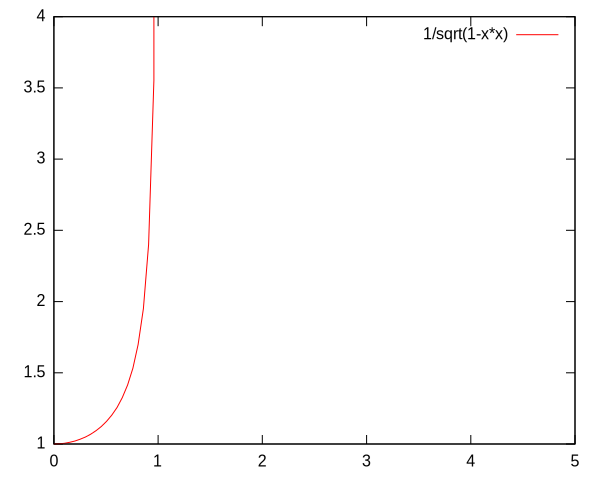

Follow Particle
Show Trace
Show Pre Boost Frame
Show Post Boost Frame
The Twin Paradox:
Take some twins. Have one stay on earth while the other gets in a rocket ship and flies to the
center of the universe and back. Upon arrival back home, the space traveller realizes they
are a time traveller as well. Everyone else has aged far beyond his expectation while
he was gone. His twin is now his older sibling.
How it works:
Lets say you are standing on Earth at position \(x^i = (x^1, x^2, x^3)\)
with velocity \(v^i = (v^1, v^2, v^3)\).
Special relativity tells that, in flat spacetime,
as your velocity in space changes, so does the rate you travel through time.
The two are linked together such that the combined 4-velocity
\(u^\mu = (u^0, u^1, u^2, u^3)\) always has a norm of -1.
The norm is calculated as \(||u|| = u \cdot u = u^\mu u_\mu = u^\mu \eta_{\mu\nu} u^\nu\),
where \(\eta_{\mu\nu} = diag(-1,1,1,1)\) is the metric tensor of flat space.
Vector norms under metric tensors are calculated as weighted inner products, written out as:
\(
u^\mu \eta_{\mu\nu} u^\nu =
\left[
\matrix
{
u^0 u^1 u^2 u^3
}
\right]
\left[
\matrix
{
-1&0&0&0 \\
0&1&0&0 \\
0&0&1&0 \\
0&0&0&1
}
\right]
\left[
\matrix
{
u^0 \\
u^1 \\
u^2 \\
u^3
}
\right]
\)
or, condensed, as \(u^\mu \eta_{\mu\nu} u^\nu = -(u^0)^2 + (u^1)^2 + (u^2)^2 + (u^3)^2 \).
Back to our 3-velocity \(v^i\) here on planet Earth. It has no such constraints.
Nor does it have any notion of how fast it is going through time.
That information is calculated as follows:
\( u^0 = \gamma, u^i = \gamma v^i \) for i our index running from 1 to 3.
The new term introduced to govern our velocity through time and to maintain our norm is
\( \gamma = {1 \over \sqrt{1 - v \cdot v}} \).
From this we can calculate:
\( u^\mu u_\mu = -(u^0)^2 + (u^1)^2 + (u^2)^2 + (u^3)^2 \)
\( u^\mu u_\mu = -\gamma^2 + (v^1)^2 \gamma^2 + (v^2)^2 \gamma^2 + (v^3)^2 \gamma^2 \)
\( u^\mu u_\mu = \gamma^2(-1 + v \cdot v) = {-1 + v \cdot v \over 1 - v \cdot v} = -1 \)
With this constraint and this transform we find that, while 3-velocity is limited to 1
(the speed of light in our current units of measurement), the 4-velocity has no limit.
The two interchange as follows:

Back to our constraint \( -(u^0)^2 + (u^i)^2 = -1 \).
It turns out this fits the form of hyperbolic functions, \( -cosh^2 (\theta) + sinh^2 (\theta) = -1 \).
From here we can make the following relations:
\( u^0 = cosh(\theta) \)
\( u^i = sinh(\theta) {\hat u}^i \),
for \( {\hat u}^i \) the unit velocity vector, equal whether we normalize the 3-velocity or 4-velocity:
\( {\hat u}^i = {u^i \over \sum (u^j)^2} \)
From this we can differentiate to find the acceleration.
Consider the 1+1 dimensional case:
\( a^\mu = {d \over d\tau} u^\mu \)
\( a^\mu = {d \over d\tau} (cosh(\theta), sinh(\theta) ) \)
\( a^\mu = (sinh(\theta), cosh(\theta) ) {d\theta \over d\tau} \)
From here we assume our acceleration is constant with respect to proper time, say \( \theta = g \tau \)
\( a^\mu = (sinh(g \tau), cosh(g \tau) ) {d \over d\tau} (g \tau) \)
\( a^\mu = (sinh(g \tau), cosh(g \tau) ) g \)
We can verify our results:
\( ||a||^2 = a \cdot a = a^\mu a_\mu = -(sinh(g \tau) g)^2 + (cosh(g \tau) g)^2 \)
\( ||a||^2 = g^2 (-sinh^2(g \tau) + cosh^2(g \tau)) \)
\( ||a||^2 = g^2 \)
\( ||a|| = g \)
Sure enough, constant acceleration.
Now that we can rest easy about the acceleration, we can move on to the position:
\( x^\mu = \int u^\mu d\tau \)
\( x^\mu = \int (cosh(g \tau), sinh(g \tau) {\hat u}^i ) d\tau \)
\( x^\mu = {1 \over g} (sinh(g \tau), cosh(g \tau)) \)
So now that we have the math for a moving frame, now we can get to the 'relativity' in 'special relativity'.
Special relativity is a model that describes relativity in a flat spacetime.
Relativity is the notion that all calculations in physics can be performed relative to any arbitrary frame of reference.
There is no origin.
To apply this to our problem at hand, consider the twin travelling away. From the stationary twin he appears to be
departing at some velocity. But to the travelling twin he appears to be at rest while the Earth is moving in the opposite direction.
To make things more confusing, light is always the speed limit no matter what frame of reference you're in. Be it on Earth or in a moving spaceship,
the speed of light is still the speed of light. Enter Lorentz boosts.
Let's say that, from Earth, it seems you're travelling along at \( u^\mu = (cosh(\theta), sinh(theta) {\hat u}^i) \).
But relative to yourself you seem to be at rest. How to go from one to the other?
What are we working with? Let's go back to our 1D case, so \(u^\mu = (u^0, u^1, 0, 0) = (\gamma, \gamma v, 0, 0)\),
for \(\gamma = {1 \over \sqrt{1 - v^2}}\).
Then for simplicity, let \(\beta = \gamma v\), so \(u^\mu = (\gamma, \beta, 0, 0)\).
How would you transform this to shift the velocity from motion to rest?
You have to shift space left and right until your velocity lines up to zero in your resting frame. But then your speed of light speed limit gets out of whack. How do you fix that too?
Just shift time up or down to correct.
\( {\Lambda^\mu}_\nu u^\nu = u'^\mu = (1,0,0,0) \)
Or in matrix form:
So we see that, after the Lorentz boost \( {\Lambda^\mu}_\nu \) is applied, our velocity becomes relative to our local frame of reference.
Assume we accelerate at a constant rate of acceleration for the first half of the trip,
then slow with constant deceleration for the second.
How long will it take, and how far apart will the two clocks be?
\( \)
Sorry, your browser does not support WebGL
Try one of these other, better browsers: Chrome Firefox Safari Opera Users:
Enter "opera:config" in the address bar.
In the "User Prefs" section set both "Enable Hardware Acceleration" and "Enable WebGL" to "1" and then click "Save".
It is still buggy. IE Users:
Sorry guys, IE doesn’t plan to support WebGL.
Consider using a more standard compliant browser.